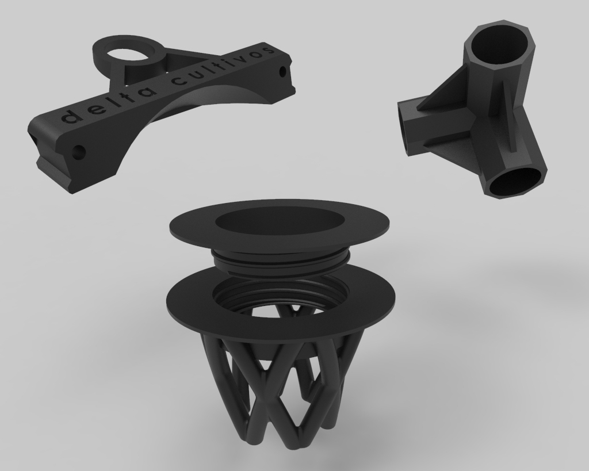
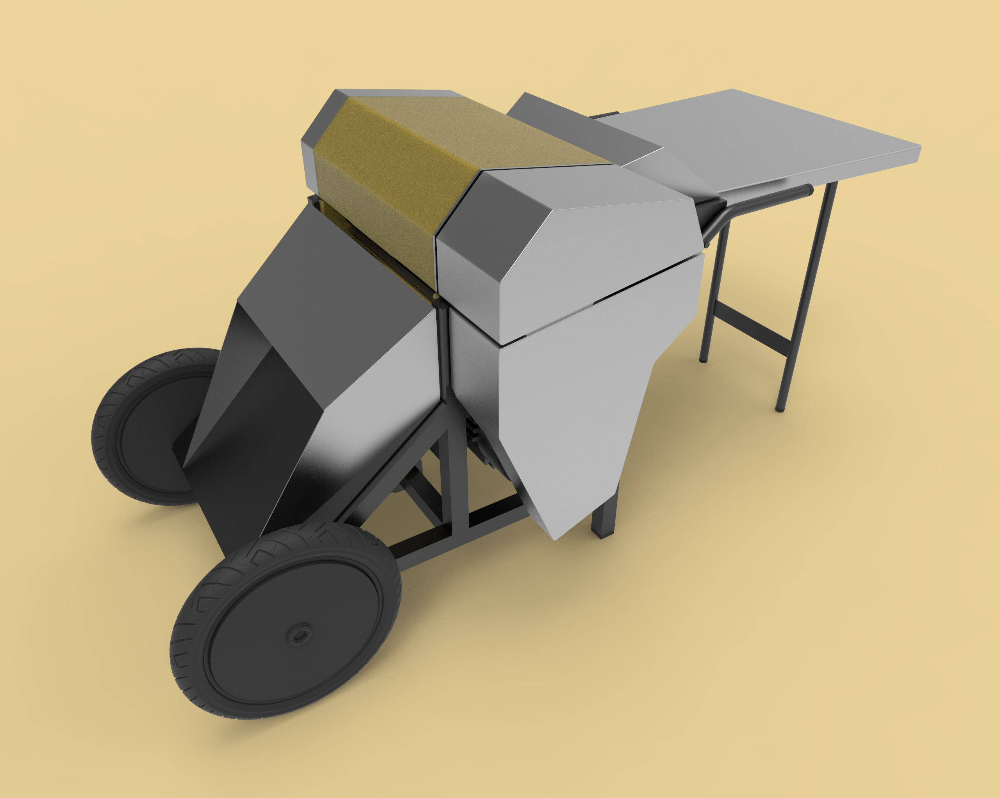
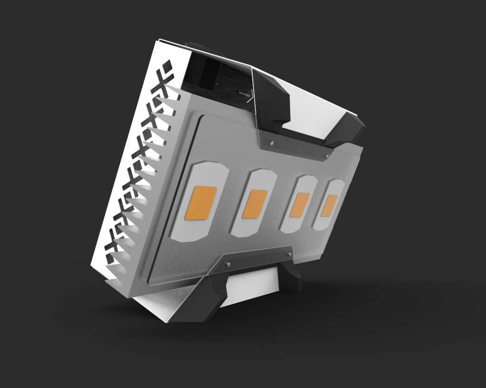
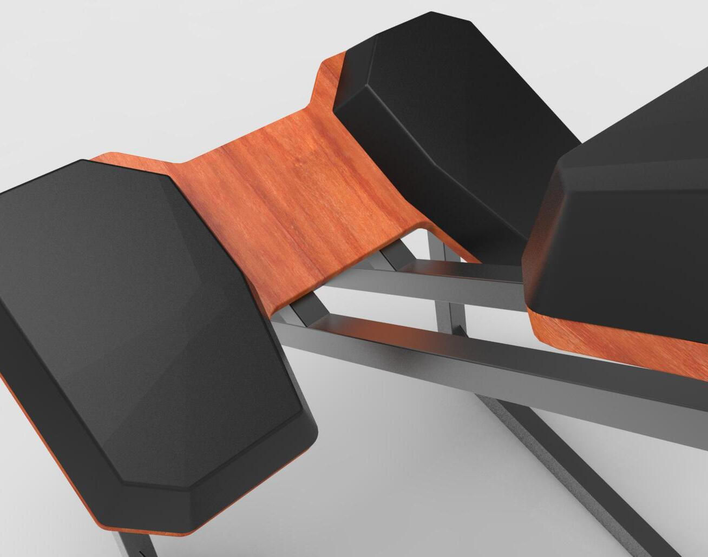

Hola! Soy Nahuel Valdez
Diseñador Industrial
Modelador 3D / Proyectista

Impresión 3D / FDM
A partir del modelado tridimensional, se trabaja en la adaptación geométrica de los componentes para garantizar una fabricación eficiente y limpia. El proceso abarca desde la resolución de sistemas de encastre, tolerancias operativas y uniones roscadas, hasta la materialización de prototipos funcionales que permiten validar la viabilidad mecánica y formal de cada desarrollo.

Maquinaria agrícola
Diseño / modelado 3d y renders para presentación de proyecto en la 1ra edición de la Expo Cáñamo en San Luis, Argentina. Se realizó un análisis previo y relevamiento de las decorticadoras para así generar esta propuesta nacional pensada para una producción local, cuyo objetivo es abarcar a los pequeños y medianos productores.

Iluminación led
-Diseño conceptual y formal.
-Gestión de proyecto.
-Desarrollo de documentación técnica.
Procesos :
(carcasa): plegado y punzonado de chapa (terminación final: microtexturado).
(apoyos):
impresión 3D - FDM

Proyecto final UNLP
-Diseño conceptual.
-Desarrollo constructivo.
-Routeado de piezas (CNC).
-Realización de
prototipo funcional a
escala.
Soluciones formales a necesidades específicas, poniendo énfasis en la forma, función y uso con un enfoque prioritario hacia el usuario.
Representación y desarrollo constructivo, documentación técnica, selección de tecnologías, ensayos, evaluación y validación de los diseños.
-Programa de diseño.
-Estudio y análisis de
mercado / competidores.
-Estrategias de venta y distribución.
-Gestión de presencia
on-line del proyecto.
Proyectos Independientes y Corporativos (2018/2026)
Materialización de ideas mediante procesos industriales y de prototipado rápido. Optimización de archivos y control de procesos productivos para asegurar la viabilidad técnica del objeto antes de su fabricación final.
Tecnologías :
⦿ Impresión 3D: Prototipado funcional y validación formal de componentes.
⦿ Ruteado CNC: Despiece y mecanizado preciso de piezas complejas.
⦿ Corte Láser y Plegado: Preparación de planos técnicos para chapas.
Freelance / Consultoría Externa (2018/2026)
Desarrollo técnico de producto y representación de proyectos mediante softwares de modelados 3D para su posterior renderizado. Gestión integral del proceso de prototipado rápido y fabricación digital, abarcando la optimización de archivos y operación para impresión 3D / ruteado CNC. Preparación de documentación técnica y planos para corte láser en metal y chapas / plegado, garantizando la viabilidad constructiva de los objetos desde la etapa digital hasta el taller.
⦿ Principales herramientas: Rhinoceros, SketchUp, AutoCAD, D5 Render, KeyShot, Illustrator.
UNLP (2014/2020)
Formación académica orientada al desarrollo integral de productos, abarcando desde la investigación de usuario y la conceptualización morfológica hasta la viabilidad técnico-productiva. Enfoque centrado en la usabilidad, la optimización de recursos, la sostenibilidad y la gestión del diseño como disciplina estratégica, articulando el lenguaje visual y el desarrollo constructivo para resolver problemáticas tanto del entorno doméstico, como también de escala industrial.
Formación Técnica y Complementaria (2020/2022
Trayectoria enfocada en el diseño de experiencias digitales integrales y la optimización de su uso en pantallas.
⦿ Diseño UI/UX (Coderhouse): Potenciado por conocimientos técnicos de código y maquetación adquiridos en la Tecnicatura de Desarrollo de Software.
⦿ Marketing Digital (Google Garage): Aporta la visión estratégica necesaria para alinear la experiencia estética con los objetivos de conversión y análisis de comportamiento.
Herramientas y metodologías: Diseño centrado en el usuario, bases de software, maquetación con HTML y CSS, y posicionamiento SEO.